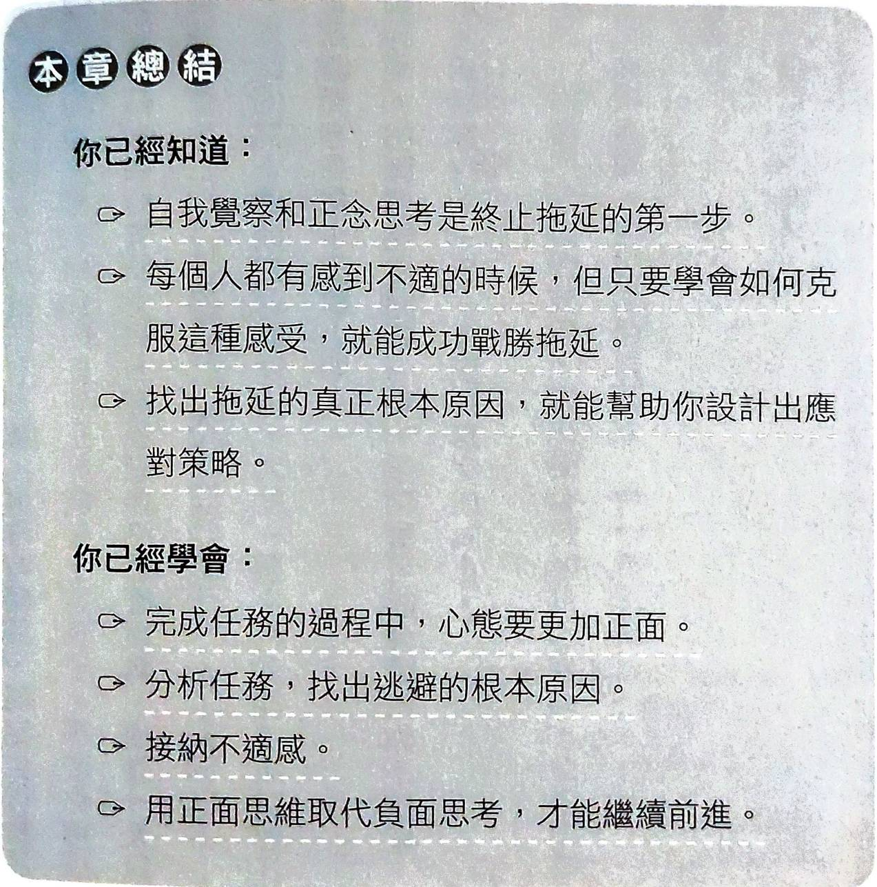
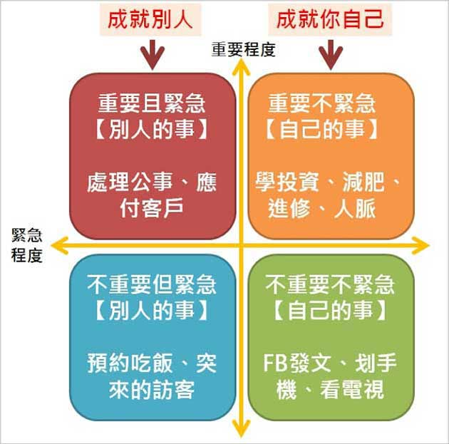
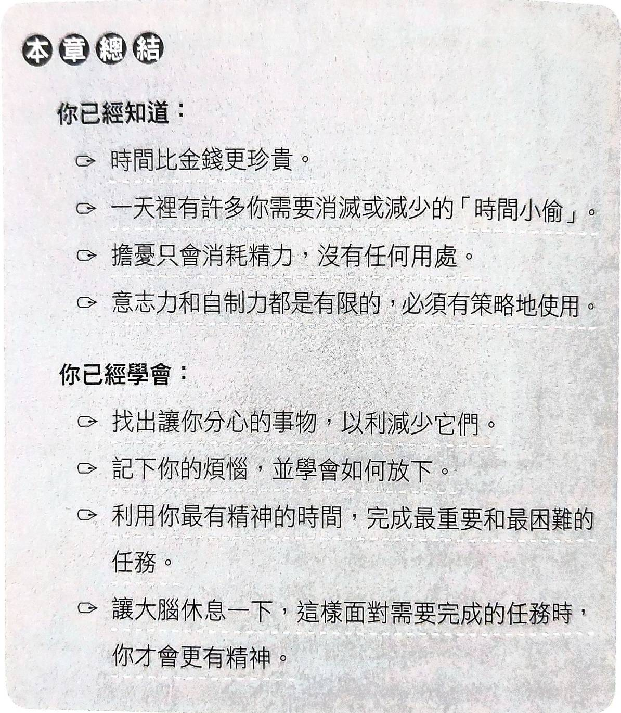
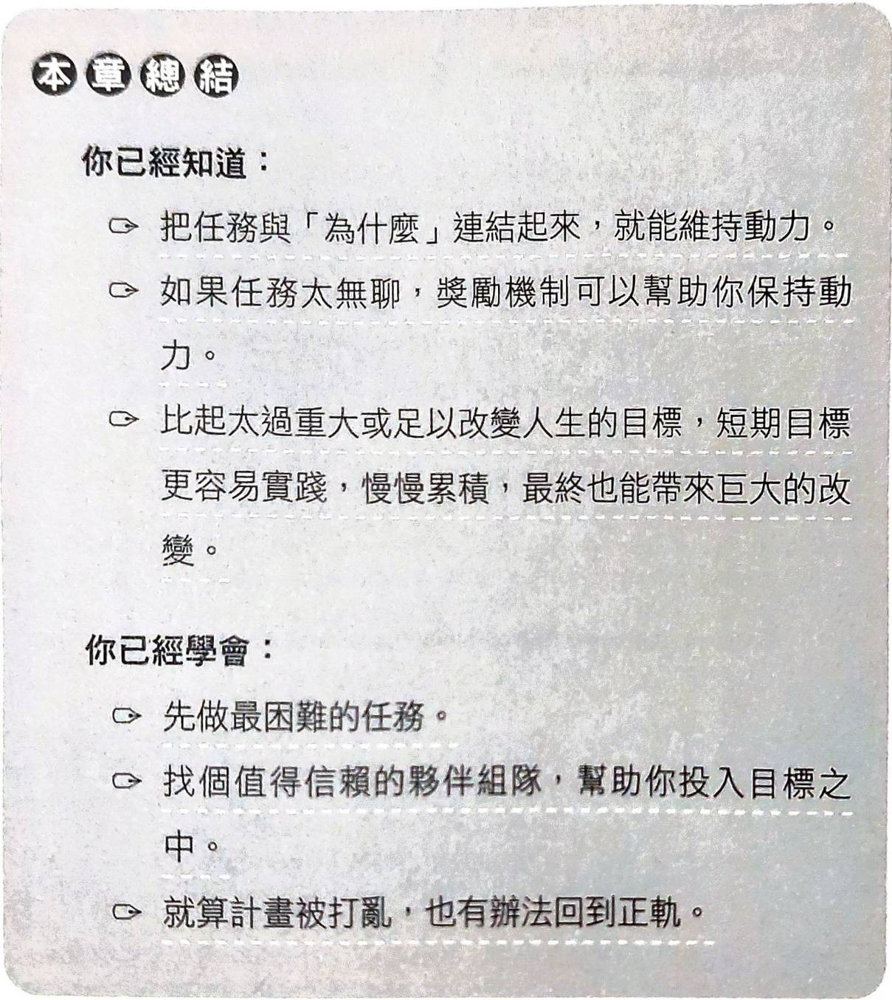

困擾我很久的拖延症
前言
自從上大學之後，我就一直深受拖延的困擾，只要是遇到能給你好幾天期限的作業跟報告，我都會想說「這作業好麻煩，好不想面對，反正還有好幾天才結束，先不用管，來做別的事」。
一直都是拖到快來不及才開始處理，幾乎都在截止日期前幾分鐘才完成並繳交，有時候甚至來不及做出來，而且因為都是趕死線前弄出來，所以都只求有不求好，也因此老師給的分數都一般般。
這樣子的拖延心態在大學階段或許沒什麼問題，因為我最近還是取得大學的畢業證書了。
不過接下來進入碩班，好像就不能再用同樣的拖延心態繼續度過，自己的畢業論文通常是有一整年可以寫，那如果我一樣用拖延心態面對自己的畢業論文，那我非常有可能在前半年，或甚至前八個月，幾乎沒什麼進度，搞得最後必須熬夜，甚至通宵地趕這個東西。
那我在6/27買了《為什麼事情明明很多卻不想做》這本書，作者設計了五週的訓練計畫，每天花20分鐘練習，讓讀者克服拖延症。
我打算確實按照作者制定的計畫進行練習，並將這五週的狀況記錄在這篇文。
說明
本文不只會紀錄自己的練習狀況，還會放上個人認為本書所提到的重點，所以這篇文會很長，敬請見諒。
因為這本書的內容我覺得值得一看再看，所以在看的同時我會記錄重點，以及提到的訓練方法跟它的實施細節，而不是像小說一樣簡略地看過去而已。
是什麼在阻礙你？
關於任務所引發的負面情緒
1)乏味無趣的任務
- 讓你覺得厭煩、興趣缺缺
- 容易被其他有趣的任務吸引
2)長期的任務
- 完成短期又明確的任務帶給我們成就感
- 長期又困難的任務帶給我們挫折
3)不熟悉的任務
- 新事物容易讓我們產生不確定感
- 需付出很多努力才可能完成
4)不愉快的任務
- 有些任務可能引發衝突
- 自然而然地想要藉由拖延，並祈禱麻煩自動消失。
- 如果主管、同事、工作環境都不喜歡，也很難有效率地執行任務。
5)令人不知所措的任務
- 任務太困難、太複雜
你是哪種拖延症患者？
憂慮者
憂慮者他們花很多時間擔心，擔心他們無法準時完成任務，擔心無法做好任務。
問問自己以下問題：
1)我是不是先花很多時間思考任務，才就定位開始進行？no
2)晚上失眠是不是因為一直想著待辦事項？no
3)任務還沒進行就已經覺得很累？no
只要至少一個問題的答案為「是」，那你可能就是「憂慮者」。
那問過自己之後，我覺得自己並不是「憂慮者」。
完美主義者
他們希望每項工作都達到完美，不會放過任何細節，花大量的時間修改內容。
問問自己以下問題：
1)我會不會執著於完美，一次次的檢查有無出錯？no
2)是否只喜歡做自己擅長的事？yes
3)對於有建設性的批評，也覺得是一種攻擊？no
只要至少一個問題的答案為「是」，那你可能就是「完美主義者」。
雖然我(2)確實回答yes，但我覺得這不足以定義我是「完美主義者」。
因為我一直都是只求有、不求頂尖，只有在最後上傳作業、報告的時候會反覆確認有沒有傳錯地方、傳錯檔案、有沒有真的傳上去而已。
而且我相信從擅長的事和不擅長的事選一個做，大部分人都會選擅長的事。
濫好人
只要是別人的請求都答應，不知道怎麼拒絕，反而耽誤自己的任務。
問問自己以下問題：
1)我是否總是自願幫忙，願意承擔更多工作？no
2)有人請我幫忙，或邀我參加一個我不喜歡的活動，我總是很難拒絕？yes
3)我的一週工時是否超過薪資給付的範圍？no
只要至少一個問題的答案為「是」，那你可能就是「濫好人」。
雖然我確實覺得自己算是這類人，但我從來沒有因為別人的事而耽誤自己的任務。
瞎忙族
會同時進行很多任務，忙了很久之後，卻看不出完成了什麼長期或大型的任務。
他們常被簡短的小任務吸引，因為馬上就能得到完成任務的滿足感。
問問自己以下問題：
1)我每天做很多件事，卻從沒完成更大或更重要的任務？yes
2)在會議中，我會很難傾聽或好好坐著？yes
3)我經常投入新嗜好，但很快就放棄，或在一件事未完成就馬上跳下一個任務？前半yes後半no
只要至少一個問題的答案為「是」，那你可能就是「瞎忙族」。
天阿，這個超級貼切我，綜觀我大學四年，做了一大堆作業、報告、專案，但是真的沒有能拿出來說嘴的作品。然後在上課或是meeting的時候，我也常常聽個半小時就開始恍神。
隱性拖延症患者
他們不會超過任何截止時間，但這類人都是等到最後快沒時間了，才用盡全力般的趕工，通常做出來的東西品質都不太好。
問問自己以下問題：
1)我喜歡在壓力之下工作嗎？no
2)連飯店訂房、搶演唱會門票也拖到最後一刻才下訂？no
3)任務已火燒屁股才開始，搞得必須熬夜才能趕上截止時間？yes
只要至少一個問題的答案為「是」，那你可能就是「瞎忙族」。
我覺得自己也算是這類患者，雖然我極少會有作業、報告超過deadline而沒交，但我只要是較大型的作業，都會拖到快來不及才開始，常常因此晚睡。
第一週
你在逃避什麼？
有時候我們連自己現在是否在拖延都不清楚 ，所以要先意識到是否拖延、為何拖延。
作者提供的關於「察覺拖延」的練習方法：
確立要達成的結果
1)展開新的一天或是新工作
2)先了解自己想要達到什麼結果
3)設立「漸進式」計畫來達成結果
將執行細節與實際目標連結在一起，能保持完成任務的動力，也更能意識到自己有沒有在逃避。
為時間負責
當你常把「我沒時間」掛在嘴邊，就是漸漸洗腦說時間是「無法控制」的。
不仿先看看自己是否知道自己是如何運用時間的
制定計劃
列出to-do list，大家都會，但比起列出事項，更應好好規劃如何完成這些事項。
面對每項任務，提問自己：
- 可以放棄這任務嗎？
- 這是目前工作中最優先的事項嗎？
- 需要哪些工具、資源、幫助來完成任務
冥想
定期冥想可以保持平靜，提高察覺能力、注意力。可以在每天早上，或是心煩意亂的時候進行冥想。
冥想就是什麼都不要想，可以在冥想的時候記錄下來在腦海中閃過的事物，簡略地描述就好，不用花太多精力在那些事物上面。
冥想的替代方案
當冥想對你來說「靜心」的效果並不明顯，可以嘗試打掃、繪畫、運動、散步。
坦然面對不適
為什麼會拖延，是為了逃避焦慮、恐懼、無聊 等帶來不適的感覺。
接納與承諾療法(ACT)
接納這些不舒服的感受，不讓這些感受擊潰我們，影響我們往更遠大的目標前進。
靜坐接納
當不適感出現，你會下意識的想逃避。透過靜坐去練習接納這些感覺，一開始可以先2~3分鐘，之後再慢慢拉長。
練習靜坐時，試著完成以下步驟：
1)舒服地坐在椅子上，閉上眼睛自然地呼吸。
2)感受呼吸的節奏和身體的起伏，專注於每一次吸氣和吐氣。不要改變你的呼吸，觀察它就好。
3)察覺身體各個部位的感覺，以及皮膚感知的溫度。只要帶著包容與同理心，去觀察並接受你正在經歷的所有。你不必關注或試圖消去不適感，只要觀察就好。
4)有任何想法和感覺出現時，就一樣帶著包容與同理心來感受它們，不要推開或抓住，也不要做任何判斷，只要持續觀察即可。你確實意識到自己有這些想法或感受，但也要明白，這些想法或感覺都不能代表你。
5)睜開眼睛之前，讓自己繼續多觀察幾分鐘，不要做任何批判。睜開眼睛時，用相同的同理心去展開你一直拖延的工作。
練習完後，拿出「停止浪費時間」筆記本並回顧：
1)你覺得這段過程如何？
2)引發哪些感受？
3)你的反應如何？
4)想像一下任務完成後，你感覺如何？
害怕失敗
害怕失敗讓我們不敢踏出第一步，想著萬一付出努力，全心投入卻還是失敗呢？
不斷地去想失敗可能有什麼後果，於是用拖延來逃避。
面對焦慮感
以下練習可以幫助你面對憂慮感：
1)評估可能性：若用一到十來評分，你所擔心的事真正發生的可能性是多少？怎樣才能降低這些事情發生的可能性？
2)考慮所有可能的情況：我們擔心一件事的時候，往往直接設想到最壞的情況。因此，除了最壞情況以外，你也要設想中庸的情況和最好的情況。這些情況中，哪一個最有可能發生？
3)想辦法處理：如果最壞的情況真的發生了，你會怎麼處理？你可以事先想好一套解決辦法，就算你持續設想最糟的情況，也能因此而減輕憂慮，畢竟就算壞事真的發生了，你也已經有適當的計畫來面對處理。你絕對比自己想像中能幹得多。
工作上的失誤可能只是一次學習經驗，不一定會終結你職業生涯的惡夢。要是你已經被指派了任務，卻遲遲不肯著手進行，反而更有可能讓你的主管發火，嚴重甚至可能讓你丟了工作。畢竟你連嘗試看看都不願意，他們為什麼不直接雇用一個肯做的新人就好？
害怕成功
除了害怕失敗，有些人也害怕成功。害怕完成這個任務後，上司對我的標準、期望變得更高，我會變得無法勝任。
向下追問法
使用認知行為治療(CBT)的技巧，探索你許多不經意的想法和混亂的思緒。
拿出「停止浪費時間」筆記本，以負面思考 為標題，記錄心中產生的負面想法，然後畫一個向下的箭頭，寫下為何會有這個想法，然後一直將箭頭往下畫，直到找到問題的終點。
作者的例子：
不想在大眾面前演講
-> 其他演講者看起來更有魅力
-> 我又胖又醜
-> 別人會因為我沒魅力而拒絕我
-> 我害怕被拒絕
負面思考
負面地思考侵蝕我的自信與情感的健康，如果你一直告訴自己是無能、毫無價值 ，你怎麼可能成功？
所以，關閉自我批判，拿出「停止浪費時間」筆記本，列出所有的負面思考，並針對每個負面思考想出一個正面想法。
第一週行動計畫
拿出「停止浪費時間」筆記本，從你正在拖延的幾個任務中挑一個寫。
1)找出沒執行這項任務的可能原因
2)想避免哪些情緒與結果
3)學習接受過程中出現的不適感
4)制定出一個行動計畫

第二週
為何需要上部結構
在現有的行程表上建立出「成功的上部結構」，確保我能完成重要任務。
好的上部結構能讓你：
1)專注於手上的任務
2)減少分心、跨越障礙
3)提供方法去面對造成拖延的行為
如何建立上部結構
上部結構是一份「完成任務」行程表，分別擬定每一個任務的完成時間。
上部結構專門用來強調任務的死線和交期、事情的順序、任務的重要性 。
步驟一：學會分類
看看所有的待辦事項，哪些最重要，哪些最應優先處理，先不用管要如何執行。
步驟二：工作流程
作者有提供一個任務順序編列法，但我覺得不適合我，所以我決定使用這個方法：

也介紹了Trello和Airtable工具
步驟三：每次一項任務
不要「一心多用」，同時處理很多件事只會降低效率，而且更容易產生拖延。
步驟四：打造每一天的上部結構
將一整天分成好幾個區段，每個區段可以是一小時或半小時，然後一個時段就做一件事。
不一定要全部都排正事，可以適度安排休閒活動。
何時該處理電子郵件
我們會在email上花很多時間，整天看著一堆未讀未回的信件 而不知所措。
收件匣歸零法
找出優先順序較高的信件，整理好以方便檢索，以下是進行步驟：
1)依照類別、優先順序分類信件
2)刪除不重要的信件，並刪除垃圾桶。
3)若別人可處理這封信，就轉給適當的人由他處理。
4)依據優先順序回覆信件
不要直接在收件匣處理信件，先分類到適當的標籤中再一一處理。
管理信件
文字自動跳出軟體：PhraseExpress、WordExpander、Breevy
管理聯絡人清單：MailerLite
篩選：Gmail可以根據郵件來源自動分類
每日待辦清單
每日待辦清單應該是靈活的，可以不斷地加入新任務，然後完成任務時劃掉。
一天結束後，把剩餘的任務和明天的任務都加入明天的待辦清單，並決定好順序。
只有不斷地堅持每天列出待辦清單，才能從中獲得助益。
第二週行動計畫
重複地練習如何建立上部結構 所講的步驟，最好是每天都這麼做。
第三週
誰偷走你的時間
這些行為會浪費你的時間，影響你的工作效率：
1)沒有明確目標，而且沒有重點的對話。
2)在工作時來私人電話
3)社交和八卦
與其他人的互動佔據我們一整天大部分的時間，所以應有效率地和別人打交道。
任務怪獸
這些任務目標模糊且不斷擴大，沒有確定的結束日期，也無法知道到底要花多少時間。
像是打掃家裡、改善社交、碩士論文
搶回你的時間
媒體與科技產品
當你正保持專注於困難的任務時，只要一個小小的社群軟體通知、簡訊通知就能干擾，然後你得花超過20分鐘才能回到被干擾前的狀態。
1)Email：關掉信件通知，但同時養成每天收信的習慣。
2)瀏覽器分頁：過多的分頁會分散注意力，只需要留下和任務有關的分頁就好。
3)社交媒體：除非你是社群小編，否則有任務在身時不要碰，等到非任務時間再處理社交媒體的通知。
4)智慧型手機：只留重要的app開啟通知，其餘的通知盡量關閉。
任務怪獸
前面提過，任務怪獸會嚴重消耗你的時間。下列方法可以防止任務怪獸搶走其他的工作時間：
1)明確指出這項任務的目標
2)自己設定要給這個任務多少時間，以便自己進行規劃。
3)把大任務細分成數個小任務並列出來，依序完成。
4)如果這個任務沒有deadline，就制定出自己的時間表。
你的大腦是最強的時間小偷
注意力分散，無法集中
有了搜尋引擎後，我們只需簡單地輸入任務資訊，就會跳出一大堆相關資料，但同時會出現各種廣告，萬一裡面有令你感到興趣的資訊，你就會分心了。
當這些資訊在分散注意力時，可以用下面兩個方法讓你集中：
1)我們的意志力很有限，每天只有一點點。所以要認知到自己的意志力很少，應放在最重要或最困難的任務上。所以可以將這類任務安排在早上，然後低難度任務安排在下午。
2)為某個任務預留可能半小時或一小時的集中時段，在這個時段就比較容易保持專注。
分心日記
拿出「停止浪費時間」筆記本，寫下「分心日記」。
在任務開始前設定番茄鐘，每一次當你在休息時間到之前中斷工作，就記錄下來你是做了什麼和任務無關的事，這樣做可以讓你知道自己主要是因為什麼原因而分心。
除了用紙本的方式紀錄，也可以使用Toggl、RescueTime 等app。
擔憂
我們常花大量時間、精力去想「萬一我沒能及時完成？我有沒有做錯？」這類會讓你擔心的問題
煩惱日記
拿出「停止浪費時間」筆記本，寫下「煩惱日記」。
只要一產生這類擔憂的想法，就寫下來，等到一個月後再來回顧，並將沒有發生的擔憂劃掉。
讓大腦休息
有些人會覺得自己一週可以花60小時以上在工作上很厲害，但他們不知道這樣做是在傷害大腦，適當的休息可以讓大腦每天都能保持高專注力和精力。
可以試試看：
1)使用計時器，每工作25分鐘，時間到就休息5分鐘。(Youtube頻道Abao in Tokyo做了很多25+5的番茄鐘影片，我打算用這個規律。)
2)關閉電腦上所有不需要的程式和分頁，或收拾用不到的物品，在任務與任務之間自我「重啟」
3)午休時間睡個二十分鐘
4)下課時間就回家，晚上和週末好好休息。
第三週行動計畫
這一週加入分心日記、煩惱日記 ，為每個任務分配時間，並用一個計時器確保每個任務都有在分配的時間內完成。一旦你因為分心，或是有突發狀況而打斷，就停止計時，並記錄為何打斷。

第四週
集中注意力好難
一次只做一件事
難以集中的其中一個原因，是我們不讓大腦適當運作，導致大腦過於疲累。
也就是我們沒有專注於單一任務，一心多用，同時受到信件、社群軟體等干擾。
運用以下法則，讓你擺脫一心多用：
1)為隔天先規劃好任務順序，同時決定好任務的順序，這樣讓你隔天不用花精力想應該先做哪一個。
2)設定一個「火力全開」的時段，一天也許一個小時就好，這個時段裡讓自己盡量全神貫注在任務上面。
3)盡可能減少干擾，並確實按照你安排的順序執行任務。
組塊化工作
為每個任務規劃一塊時間，我打算以番茄鐘為單位，意思就是我會給某個任務安排多少個番茄鐘。
雖然專注在一件事是好的，但也不要一整天只做那個任務，因為做太久你的大腦會膩，同一個任務大概做個兩小時就可以換成其他的，這樣安排也能讓你的大腦更加投入在這些任務中。
冥想：正念冥想
當太多事情同時搶奪你的注意力，不仿進行冥想，可以用以下方法練習：
1)站起身，雙手輕鬆垂在身體兩側，姿勢要放鬆。
2)用鼻子深深吸氣，慢慢數到四，並充分擴張腹部。試著不要去思考任何事，只專注於吸氣就好。
3)嘴唇微開，用嘴巴吐氣，慢慢數到四。
4)重複以上步驟十次，全神貫注於你的呼吸。
運用這個正念冥想來關注呼吸，讓你此刻完全專注於一件事情，也就是你的呼吸，並徹底放下其他讓你分心的事情。
隨著練習完全專注，工作時就會更容易專心在單一任務上，而不會一心多用。
冥想：開放覺知
方法和接納與承諾療法(ACT) 的靜坐接納類似，只差在這個是要去戶外找一個空曠的地方，仰望並觀察天空，不去聚焦任何的景物。
身心連結
疼痛、飢餓、疲勞和不健康的身體都會影響我們專注的能力
睡眠
如果你睡不夠，大腦會無法發揮潛力。
畢竟當你的休息品質更好，專注力也更可能提高。
飲食
大腦佔了人體總消耗能量的20%，所以吃的好也是很重要的。
這些食物對大腦很有幫助：花椰菜、蛋、堅果、南瓜、鮭魚
這些食物對大腦有害：高度加工食品、汽水、運動飲料、能量飲料、非天然果汁
咖啡因的話，適量（約一天一杯）是沒問題的。如果每天攝取量超過標準，過幾個小時之後你就會經歷「咖啡因崩塌」，完全失去精力做任何事。
能量飲料的咖啡因含量是咖啡的好幾倍，喝了只會讓你焦慮，並且發生某些疾病的機率增加，所以能不喝就不喝。
運動
適度的運動帶來的好處真的太多了，以下是帶給大腦的好處：
1)運動讓你心跳加速，進而讓更多氧氣進入大腦，大腦的生長、癒合非常需要氧氣。
2)運動時會釋放促進大腦活動與改善情緒的神經傳導物質
3)每週運動120分鐘就有助於提升記憶力
4)當身體有大量活動，大腦也會跟著活躍。像是午餐時間散步可以讓下午時注意力比較集中。
紅色警報
我們的科技產品只要一有新的消息，無論是email、社群軟體，都會發出通知。絕大部分的通知都是不重要的，那我們應該如何從中區隔出重要的通知呢？
調整信箱通知
如果你有定期收信的習慣（頻率每天一次以上），那你可以直接關閉信箱的通知，每天設定一個時間回信即可。
調整社群軟體通知
能關掉就關掉吧，畢竟都是朋友的消息而已，一般來說不會有很重要的訊息。
（其實我覺得關通知沒什麼用，因為我即使沒通知還是會忍不住去滑社群軟體。）
第四週行動計畫
經過前面的訓練，你現在會每天先給任務分類，並安排好隔天的行程，這一週的訓練就是減少周圍帶來的干擾。
所以你現在的to-do list可能長這樣：
第五週
你的動力來源
雖然你確實按照前面所教的進行練習，而且真的有一些成效，但跟隨你多年的拖延習慣似乎沒有因此消失，甚至可能慢慢地回到以前的狀態。
追求改變的第一步，是確定你想改變的原因。可以問問自己「我想藉由改變達成什麼樣的結果？」
持續自我激勵
當你面對的是讓你感到無聊，或是你完全沒興趣的任務時，以下有些方法可以讓你維持動力，即使你根本不想進行那項任務：
1)去回想為什麼你要做這件事？
2)設置獎勵方案：將眼前的任務分成好幾個階段，每完成一個階段就給自己一個獎勵。（這個我有試過，但我會花很多時間去想怎麼制定獎勵，然後時間一樣浪費掉了。）
3)不斷弄假，直到成真：你就一直假裝自己很有動力，欺騙自己的大腦，直到你真的有動力。
任務價值反思
拿出「停止浪費時間」筆記本，寫下一個你覺得很重要，但一直被你拖延的長期任務，然後記錄下這個任務能帶給你什麼。
以下有兩個例子：
(1)任務：展開健身計畫
價值
- 會有精神
- 有餘力照顧家人
- 可以參與我喜歡的活動
- 可以去健行，享受大自然的美好時光。
- 長期保持健康，就算老了也能保有活動力。
(2)任務：每月兩百美金的固定儲蓄計畫
價值
- 買日常用品時會因此節省
- 存一筆應急用的儲備金
- 為假期預留資金
每天做到一點點
大家常會在新年訂出今年的目標，但只堅持前幾個月便放棄追逐目標。
所以關於你的新年目標，試著想要怎麼拆解成每天都能達成一點點，一點一點累積而成。
依照決定規劃行程
既然已經決定好要每天做到一點點 ，那就確實地每天安排一個時段來追逐你的目標。
犒賞自己
當我們完成任務時，可以自己給自己獎勵，像是：
1)劃掉你完成的任務，這個確實蠻爽的XD
2)可以找一個日曆，並定一個指標，如果今天有達成，就在日曆上做個記號。看到每天都有做記號，就會產生一個自我激勵的效果，畢竟你可不希望這個記號中斷。
問問自己「為什麼？」
來組隊吧
找一個值得信賴的夥伴，對彼此負責，監督彼此朝著目標前進。
你們可以互相分享計畫，然後每週討論一次看看自己這週有什麼進展。
當計劃被打亂
如果你當天的安排被打亂，像是突然有接不完的電話，信箱被塞爆。
以下三步驟可以讓你快速回到正軌：
1)就先把這些擾亂你計畫的事情處理完，也不要因此自責。
2)重新安排任務的順序，這時候那些「待辦事項」的app就很好用。
3)縮短你的作業時段，假設你每天給每個任務30分鐘，就縮減一些，以因應突如其來的麻煩。
鎖定重點
如果計畫不幸地被打亂，就先去完成那些突然發生的緊急事件，先把例行事務放一旁。
有彈性一些
你可以依照被打亂的程度決定是要調整計畫表就好，還是整個砍掉重新安排。
請求幫助
如果你有些任務無法在特定時間內完成，最好請求別人幫助。畢竟有時候你卡半天的東西，別人一下子就搞定了。
第五週行動計畫
先在你的計畫表寫下明天的行程，並寫出這些任務的動機。
